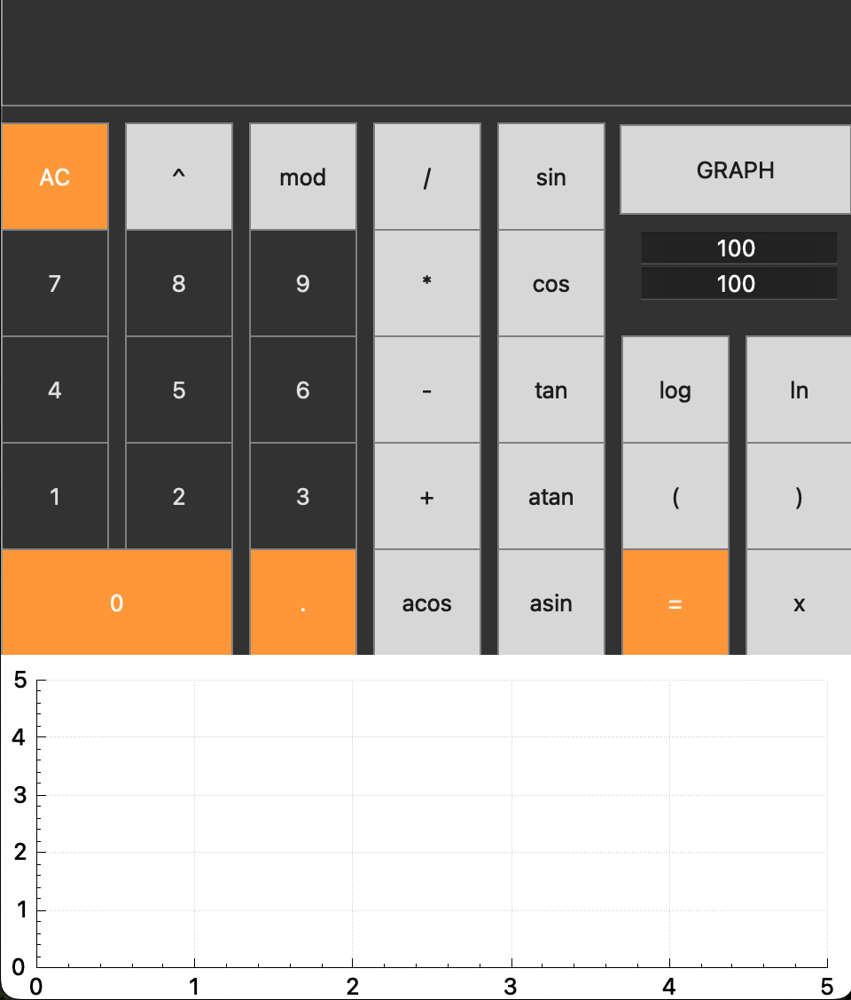

The program is implemented on the QT graphics library. The program calculates algebraic expressions and can also draw a graph.

The user can compose the entered expression. A graph will be built with default values where you you will be able to view the graph of the function despite its size, as there is a possibility of scaling.
In order to start using the calculator, it must be installed using the make install command. This command will install the application in the build folder, which will be located in the directory with the Mikefile
You can also type make uninstall to successfully uninstall the application from your computer.
It is also possible to archive a project using the make dist command.
When using, enclose function values in parentheses. Always write the sign when multiplying. To enter a variable, enter an expression and press "=". After - enter the value of the variable and press "=" again. To display a graph, enter an expression and click "GRAPH".